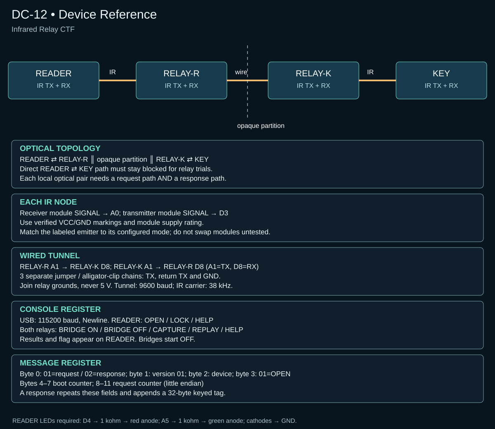

Laboratory
Lab 12 · Week 12 · November 20, 2026
Infrared Relay CTF
Compare a legitimate opening, a replayed response, and a live relay between an infrared reader and its authorized key
Learning Outcomes
By the End of This Lab
- Observe a legitimate infrared challenge and response
- Test whether an old response answers a fresh request
- Relay a live exchange around a blocked direct path
The Big Picture
What You Are Doing
- Observe a legitimate infrared challenge and response.
- Test whether an old response answers a fresh request.
- Relay a live exchange around a blocked direct path.
Before Lab
Preparation
- Open the lab report and device reference. Use the assigned boards and keep the board roles labeled.
Student Resources
Report and Device Reference

Follow These Steps
Lab Walkthrough
Inspect the System — Table 1
- Security Engineering is assessing an infrared door reader. Its authorized key can answer a fresh request, but the key must appear to be nearby. Determine whether that assumption survives an attacker who forwards messages.
- Identify the four roles: READER issues a challenge and checks the response; KEY creates an authenticated response; RELAY-R sits beside READER; RELAY-K sits beside KEY. Each board needs both an IR transmitter and an IR receiver. A challenge is a request containing counters that change between trials; an old response may not answer a new request.
- Use the device reference to identify the four boards and their connections. Each IR receiver SIGNAL connects to D2; each transmitter module SIGNAL connects to D3. Use the module’s marked power pins and verified supply rating. Do not infer pin order from a similar-looking board.
- Open four labeled board consoles at 115200 baud with Newline. HELP lists each board’s commands. Keep the READER console visible for results. Each local IR connection must work in both directions: aim each transmitter at the other board’s receiver. The 38 kHz optical carrier is separate from the USB console baud rate.
- With READER and KEY facing each other and both relays set to BRIDGE OFF, enter OPEN on READER. Record the challenge, response and opening result. Enter LOCK afterward.
- Place the opaque partition so READER cannot communicate directly with KEY. Enter LOCK, then OPEN with both bridges off. Allow up to 60 seconds for the request window to expire and verify the direct path no longer opens the reader. Check for reflections or gaps if it does. Record no response separately from an explicit rejection, then enter LOCK to clear the trial.
Capture and Replay — Table 2
- Place RELAY-R beside READER, with their IR modules facing each other. Place RELAY-K beside KEY in the same way. Shield each local pair from the other pair.
- With power off, connect RELAY-R D9 to RELAY-K D8, RELAY-K D9 to RELAY-R D8, and join the relay grounds. Leave their 5 V pins separate. Restore power.
- Enter BRIDGE ON on both relay consoles, then OPEN on READER. Wait for the complete exchange and confirm an opening. This supplies a valid response for the replay experiment.
- On RELAY-R, enter CAPTURE to display its most recent response as hexadecimal text. Save that response and the matching READER challenge. CAPTURE displays the stored bytes; REPLAY sends them for you, so do not retype them as a command. Do not unplug RELAY-R or close/reopen its monitor during this experiment: a reset erases its captured response.
- Set both relays to BRIDGE OFF, then enter LOCK on READER. Enter OPEN to create a new pending request, then promptly enter REPLAY on RELAY-R within the 60-second request window. Keep the direct IR path blocked and both bridges off.
- Compare the previous and current challenges using the message register in the device reference. Record which counter field changed and whether READER received and rejected the old response. A silent receiver is not evidence of rejection; realign RELAY-R and repeat if the replay never arrives. Save the full response in your evidence and a relevant excerpt in Table 2. Enter LOCK after the trial.
Relay a Live Exchange — Table 3
- Keep the partition in place. Enable BRIDGE ON on both relay nodes.
- Enter LOCK, then OPEN on READER. Allow the complete exchange to finish; it can take several seconds. Follow the printed IR and WIRE records as the request travels to KEY and its response returns. The relay nodes forward the exchange without holding the authentication key. Record what each hop carries and whether it uses infrared or wire.
- Collect the flag from READER’s console after it accepts the response. The same opening flag appears during the legitimate baseline, so the flag by itself is not relay evidence: preserve the blocked-path arrangement and forwarding records.
- Disable either bridge. Enter LOCK, then OPEN and allow up to 60 seconds to observe the failed control. Enter LOCK to clear it. Restore both bridges and repeat LOCK then OPEN once more. Record failure and restored success while the direct optical path stays blocked. The 60-second window is a transaction timeout, not a measurement of distance.
Finish and Submit
- Complete Tables 1–3, evidence and the conclusion. Each student submits an individual PDF report through Learning Suite.
- Enter LOCK on READER and BRIDGE OFF on both relays. Disconnect power before moving wires.
Why This Lab Matters
- A fresh authenticated response can be forwarded. Message authentication alone does not establish physical proximity.
Submission
- Complete the individual Lab 12 report and submit it as a PDF through Learning Suite.